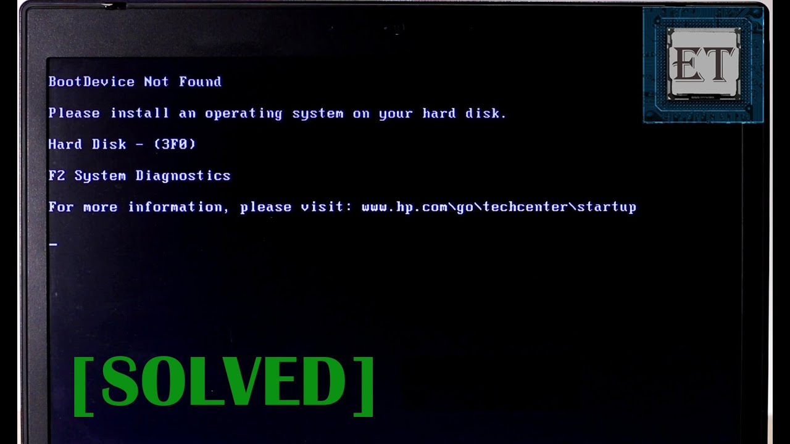

(Initially written on 2022-04-13)
In this "article", I will write about several different operating systems that I have used. I am not an expert on any of them and there is a high chance that none of my rambling will be useful to anybody. I am mostly writing this "for fun" or "for myself", if that makes sense.
When I first got my laptop, which is the computer I've used for most of my life, it came with Windows 10, which I used for a while. For the most part, I thought it worked fine. I didn't have anything to compare it to. Eventually, however, after repeatedly hearing about Linux and how it was supposedly "good for programmers", I decided to try it out.
In hindsight, Windows 10 (and later Windows versions, I assume) is not very nice at all in relation to Linux (I'll be referring to the family of operating systems, not the kernel specifically, as "Linux"). Everyone has their own ideas about what makes a "good" operating system, but my personal issues are
I haven't spent very much time trying macOS, the other main operating system, but it seems to suffer from most of the same problems as Windows.
When I first learned that there are multiple Linux distributions, I did not visit each distribution's website and read about their features. Instead, I read somewhere that
Using this information, and looking at some kind of list of Ubuntu flavours, I decided to go with Lubuntu, due to it supposedly using minimal system resources. I guess at this point I had already subconsciously internalized that bloated software was wrong, even if I didn't understand the details. In hindsight, an Ubuntu-like distribution is not going to be what you want to go with if your goal is minimalism.
Lubuntu was easy to install when I followed its instructions. It was even enjoyable, considering how novel it was for me, who had never considered the concept of a non-Windows operating system running on my laptop.
The only point at which I was annoyed was when it came to booting into Lubuntu after the successful installation. Instead of loading Lubuntu, I saw a message similar to this thumbnail from this video:
Lubuntu's boot loader was installed as an EFI file and my computer wasn't loading it automatically. I didn't know this in advance. After spending literally over four hours trying many different things, I found an option in my boot menu that could load an arbitrary EFI file, where I found Lubuntu's entry listed. I had to take several naps in between troubleshooting sessions because I wasn't really used to banging my head against brick walls yet. I would much later go on to figure out how to automatically boot an EFI file while using Kiss Linux, but for now I had to go through the entire boot menu every time. None of this was Lubuntu's fault at all, though.
After installation, I had fun looking at its LXQt GUI and fiddling with the many available screensavers. Ultimately, after having my desktop crash from switching a wallpaper and receiving an "idk" from the Linux Support Discord server I went to, I realized the importance of community. If nobody uses your operating system, nobody is going to be able to give you direct advice when something goes wrong. This is fine if you're capable of fixing most things yourself, but that was not the case for me at this point.
Instead, I switched to the main, official Ubuntu distribution, which I now understood was significantly more popular than Lubuntu. I never had any more crashes, and I used Ubuntu for a long time.
I dislike Ubuntu for the same kinds of reasons a lot of people do. For beginners, I dislike their inclusion of diseases like Snap and Flatpak, which confuses the user on what way they should install software. Instead of trying to replicate their workflow on Windows, a distribution targetted at beginners should make it clear how Linux works and make it easy to adjust to it.
In the context of me specifically, I dislike the enormous amount of software that it's shipped with, none of which I need or would ever want. I'm sure it's possible to remove all of it, but who would go through the pain of doing so when you can start with a blank slate instead? I'm sure some people would enjoy the supposed "challenge" but somebody like that would probably be annoyed with the fact that it would be difficult to brag about it. As soon as you say "I use Ubuntu", it's hard to paint the picture you want to paint with clarification.
I also dislike their release and package model. On an operating system for servers, I understand why it might be important to ensure that everything running has been tested for long periods of time by users, but this is meaningless on a desktop operating system. "Rolling release" makes more sense for most people.
Arch Linux is the next distribution I tried and the one I now consider the best for my use cases. There are still things I dislike about it, though.
Initially, I tried Arch as nothing more than a meme, hearing tales about it on the internet and wondering what was so funny about it. After using it for a while, my mindset shifted to something close to what it is now. The main things I like about Arch are the
neofetch looks cooler on Arch
than it does on most other distributions.One thing I dislike is that despite how minimal it is, there are still things you are locked into, which is inevitable for any distribution. Mainly, on Kiss Linux, I enjoyed avoiding systemd and D-Bus, but I admit that at that point it's just a meme instead of anything remotely practical.
Besides that, I dislike the general "i use arch btw" stereotype surrounding Arch Linux. Many people have the impression that Arch Linux is artificially difficult to install and use, saying that it's only for masochists. I completely disagree with this idea. In fact, I think Arch Linux is the easiest distribution to use. Installing it is easy too; I can do it in around ten minutes, although I can see why it can be confusing for somebody unfamiliar with Linux, which is why I (unfortunately) cannot recommend it to beginners.
I dislike the message "i use arch btw" specifically because it implies "Arch is painful and difficult to use, but I'm so smart that I can do it anyway. Hahaha!" which only perpetuates the misinformation.
After using Arch for a while, I decided to try Gentoo for the same sort of reason I wanted to try Arch in the first place. Unlike Arch, Gentoo did not grow to become something I considered a particularly successful distribution.
The first annoying thing was the installation, much more so than Arch's. This was furthered by the fact that I didn't yet understand what was going on with my BIOS, so I believed that my laptop would support both BIOS and UEFI, which wasn't true. I ended up failing a few installations but in the end, I got everything working, and the joy of seeing all the gcc output overpowered any frustration. It's fortunate that Gentoo provides a detailed, pretty high-quality installation guide in the form of the Handbook.
From the start, I was annoyed with the compilation. I don't have any high-end computer for cross-compilation so everything was done on my old hardware, which took ages. I didn't see and still don't see an overwhelming advantage of source packages over binary packages. I agree that
but even together, these benefits don't come close to overcoming the inconvenience of compilation for me. I dislike that some people (mostly those who have never used Gentoo) overstate the inconvenience, however, spreading lies that you can't use your computer while compiling, or that it's somehow impossible to compile while you're away from the computer while e.g. sleeping.
Besides the compilation, the shortage of community compared to Arch was felt strongly. Gentoo's packages were often out of date or dysfunctional, encouraging me to write my own packages, which at that point I had no interest in. The wiki was also much smaller in comparison to Arch's, which I continued to rely on but was only able to apply with some friction (since I wasn't on the distribution it was aimed at).
I enjoyed using the Portage package manager and the OpenRC init system, but in the end, I decided that Gentoo was a meme distribution and switched back to Arch.
After getting even more familiar with Arch, I had the longing for falling for memes again and switched to Artix. With Gentoo, although I would still say that compilation is a meme, I think it's sort of arguable. However, it's not the case for the case against systemd. I don't think anyone can seriously say that their life is demonstrably affected by using e.g. runit instead of systemd. Of course, all else equal, I think it's reasonable to avoid systemd, but I don't believe that all else is equal on Artix.
First off, internet is more of a hassle to get running on Artix than
it is on Arch. There's no wpa_supplicant.conf by default,
rfkill can be on by default, etc. which isn't a problem
in the Arch ISO, where you can simply read man iwctl and
have the pleasure of using
iwd.
By itself, this isn't much of a problem because it's relatively straightforward to figure out how to get the Wi-Fi working, but it is a big problem in the context of beginners. Unlike Arch, Artix can optionally be installed through a GUI, not unlike Ubuntu's installation. If this worked well, I would consider recommending Artix to beginners, but I cannot when Wi-Fi isn't easily configurable through a GUI. It could be possible that this was simply the fault of XFCE, which is the only graphical installation that I've tested, but I doubt it.
On top of that, I remember the experience of being annoyed with the init system packages not running their respective daemons, although my memory isn't strong enough for me to say anything for sure. I'll probably try Artix again sometime in the future.
If Artix's init systems and packages worked predictably and if Artix had good documentation for parts of it that conflicted with the Arch Wiki, I would be happy to use it instead of Arch. The logo isn't as cool, but fine.
If the developers make it effortless for people who have never used Linux to install, including Wi-Fi configuration, I would be very happy to recommend it to new users. However, only the installation, because I don't believe that the knowledge "gained" from installing Arch or Artix "manually" is particularly applicable to day-to-day usage. Trying to provide a GUI package manager, for example, would be a mistake, in my opinion.
Kiss Linux is the last meme distribution I tried before realizing that I was in denial about my prospects of "minimalism" and accepting Arch as The Answer.
The installation was pretty simple, much more so than Gentoo's. The only problem I had was related to the kernel version I chose, but that was my fault: elsewhere on the website, the developers already had an explanation of the issue posted.
The interaction with the system felt simple as well. The Kiss package manager makes sense and the package format is well-designed. Unlike Arch and Gentoo, where I would never consider reading the documentation about their package format and fiddling with my own package, I made many of my own Kiss packages. This is because there was almost no friction. You just put in the compilation instructions.
Unfortunately, there were problems that came up. First off, like Gentoo, packages are compiled and for the most part, binaries aren't distributed. I think there was one official binary repository that had a few browsers, but those were usually out of date, and I think they were demoted to "community" status around the time I switched back to Arch. This again brought in the inconvenience of waiting for things to compile, which was especially annoying when I needed to debug my build script. I might make a change, wait thirty minutes, see a compilation error, readjust, and so on, which wasn't fun.
The community being small was also a concern, but only in the context of packages. Mainly, nobody had made a working qutebrowser package, and making it myself was extremely tiring. In the end, I had C-YAML or something like that missing which caused a ~10-second startup delay. This would never be a problem on something like Arch, even if it had source packages, because other, more experienced qutebrowser users would have already figured everything out ages ago.
I say "only in the context of packages" because outside of that, the community was great. Specifically, I remember visiting the community IRC channel, where people were active, helpful, and friendly.
Next, I dislike how the official repositories threw away Xorg packages, switching completely to Wayland. Because of the nature of the package system, this isn't a huge deal: which repositories are considered "official" doesn't really matter at all, but the result is that whatever Xorg repository you're using is going to fall into lower-quality maintenance. If something breaks, it would be mostly up to you to figure out, which seemed especially problematic for packages related to the display server.
The straw that broke the camel's back was the fact that aiming to be extremely minimal requires sacrifices in usability, which comes with breakage when you don't know what you're doing. Even though I had already been using Linux for around a year at this point, I wasn't very familiar with any of the low-level systems, so every time something went wrong, it would take an enormous amount of time troubleshooting, reading documentation, and trying to implement a solution.
In the end, I decided that I wasn't knowledgeable enough to use Kiss. When I had to spend so much time on each problem, it got in the way of actually using the computer. I couldn't imagine trying to use Kiss in a workplace environment, losing half my time fixing each of my mistakes.
I haven't tried any other Linux distribution since I switched back to Arch but am open to trying more (or retrying earlier distributions) in the future.
iOS, like Windows, was what I used for a while at first, my opinions on it stuck in a chamber. For the most part, using it felt fine, but around the time I switched to Arch for the last time, I started wanting an Android phone. After buying a Google Pixel 4a (which was lucky; I didn't know that Pixels were especially open to flashing ROMs when I bought it), I've never had any desire to go back.
The biggest problem is the lack of an ecosystem. There are many great apps for Android that don't exist on iOS and there are very few decent apps for iOS that don't exist on Android. From my limited understanding of the situation, the main causes are
Even disregarding the apps, Android feels better to use than iOS does. In my time using them, Android treated me like a real person while iOS regarded me as completely digitally illiterate.
The only reason I went with an Apple phone initially was that I had this vague notion that Android was "cheap" or "low-quality". This isn't true at all. The only valid reason I see for using iOS is doing so as a twisted form of social signaling, but you have to consciously acknowledge that.
After learning about the possibility of installing custom ROMs, the first I tried was Calyx. At this point, I had been reading certain misinformation:
The truth is that Graphene is both more secure and more usable than Calyx. Calyx is nothing but a worse copy of Graphene that fails to implement important features. From my experience and from the experience of others that I've talked to, Graphene's sandboxed Google Play works far better than Calyx's microG. There is no valid reason to use Calyx unless you consider ignorance morally acceptable in this context.
The only other ROM I've heard of is LineageOS. Lineage doesn't appeal to me because I don't see any definitive advantage of it. Its main trope seems to be that it's rooted, which might be important for some people, but I don't personally hold value to it. The great thing about Lineage, though, is that it supports far more devices than Graphene does, mainly because the Graphene developers don't want any of their models to be insecure.
That's all I have to say about my preferences/experiences with operating systems. How much do you disagree with? Is there anything that you do agree with? If you really hate me because of what I wrote in this article, feel free to bully me over email if that will make you feel better. Or, if you simply think I'm misinformed and have new information (e.g. "Artix uses iwd by default now. It's as easy as it is on Arch to connect to the internet!") then feel free to share that as well.